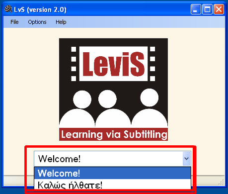

How do I select my interface language?
On running the program, you can choose the interface language. There are two languages available in the current version (Greek, English) but it will be soon extended to cover more languages.
- English (Welcome!)
- Greek (Καλως ήλθατε!)
Select the desired language from the popup menu. LvS reloads in the selected language interface.
